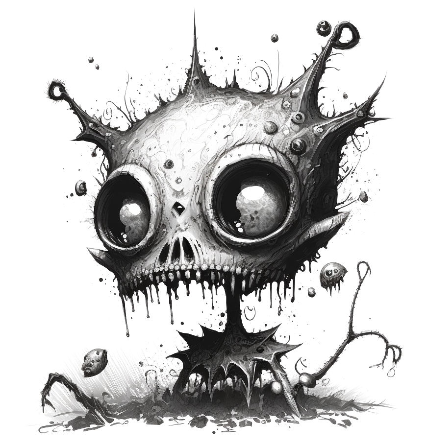
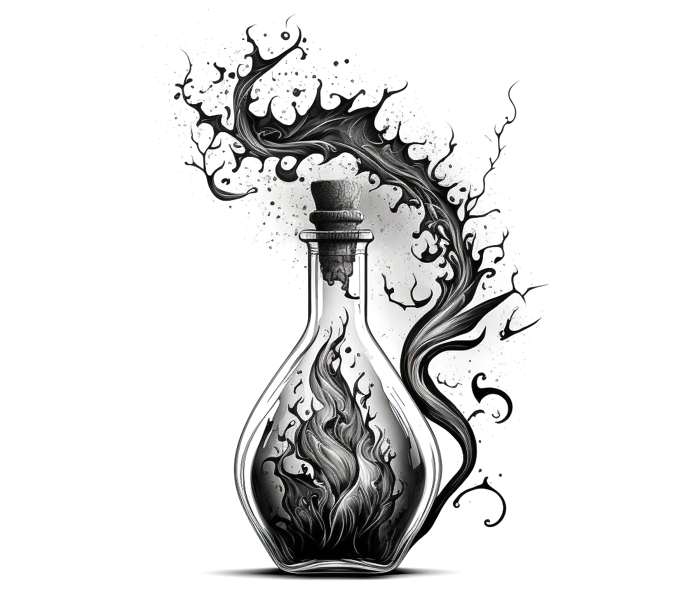

Malavoria
Mostri che fanno cose
Introduzione
Parliamo di eroi.
L’eroe fantasy. Alto, lunghi capelli biondi, armatura lucente e faccia da schiaffi.
Una prima analisi ci rivela uno spirito violento, una mezza dozzina di denunce per violazione della proprietà privata, il più delle volte alcolista e con una compagnia di tagliagole tutt’altro che raccomandabile.
Ma studiamo la cosa più da vicino.
Ha la brutale abitudine, un po’ boomer, di farsi una tacca sulla spada per ogni nemico abbattuto.
Gli chiedi di raccogliere la dichiarazione di un contadino e torna dopo un mese senza soldi, con un’armatura rubata, le teste di un minotauro, di un orco e del contadino in un sacco e 6 livelli in più.
Non ha nessun riguardo per i civili. Lo ribadiamo, anche se sottinteso nel punto precedente. Avesse la possibilità di far saltare in aria un distretto per far fuori l’acerrimo nemico, non ci penserebbe due volte.
Appena vede un paio di esserini alti mezzo metro, più brutti degli altri, li assale con cinque compagni armati fino ai denti. Un massacro.
Voi direte, che ci frega?
Abbiamo voluto dedicare questo libro a tutte le anime straziate, derubate e derise da questi avanzi di galera. Anime con una storia semplice ma con vita breve.
Malavoria è la loro vendetta.

Cos'è Malavoria?
Malavoria è ovunque
È la più potente maledizione concepita da uno stregone, una maledizione in grado di donare la vita.
Tutti gli stregoni capaci di richiamare Malavoria utilizzano il suo potere per circondarsi di docili servitori, schiavi delle loro cause.
Tra questi servitori ci sono gli omuncoli, protagonisti di questo gioco!
Sono formati dai più svariati materiali, che vanno da rami e fogliame a ferro e liquami… tutti gli scarti di un laboratorio alchemico insomma, durante le pulizie si tira fuori un sacco di roba inutile.
Ad assemblaggio ultimato, vengono risvegliati dallo stregone in persona e messi al lavoro.
Malavoria non crea burattini, bensì fornisce agli oggetti un’anima.
Di certo quest’anima non appartiene all’oscuro stregone e non è cosa rara che alcuni omuncoli si ribellino al loro triste destino…
…e sì, finisce sempre male.
Cosa serve per giocare?
Nel caso questo sia il vostro primo gioco di ruolo, questo capitolo servirà a colmare eventuali lacune. Andremo a vedere insieme quale ruolo ricoprono i giocatori e il Custode, così da permettervi di prendere le prime decisioni.
Il Custode
In Malavoria, come prima cosa si sceglie un Custode. Il Custode è colui che insegna le regole agli altri giocatori, fornisce loro un mondo, una storia e funge da arbitro.
Cosa significa arbitrare il gioco?
- Impersonare le creature che i giocatori incontreranno.
- Descrivere gli eventi, quello che i personaggi vedono, sentono e annusano.
- Tutto questo seguendo le regole riportate in questo manuale.
Pro
Hai creato un mondo e una storia da far loro giocare, questo ti rende una via di mezzo tra una divinità e il fato. Batti il cinque!
Vedere gli occhi dei giocatori brillare, quando li piazzi davanti alla geniale fesseria che ti sei inventato, non ha prezzo.
Contro
Non giocherai con loro e per gran parte del tempo farai la parte dei loro nemici e dei loro problemi.
Qualcuno di loro morirà e per questo ti odieranno.
Devi leggerti questo manuale. Visto che manco l’hai pagato tanto vale provare, no?

I Giocatori
Ogni giocatore crea un omuncolo seguendo le regole descritte dal capitolo creazione.
Fatto questo, dovrà interpretare l’omuncolo creato seguendo i racconti del Custode e le regole del gioco.


Pro
Hai creato un omuncolo! Ti affezionerai moltissimo a lui.
Contro
Il tuo omuncolo prima o poi morirà e sarai costretto a crearne un altro. Prenditela con il Custode.
Accessori
Ogni giocatore deve avere con sé un foglio, una matita e una gomma, che non guastano mai. Lo stesso vale per il Custode.
Infine, per stabilire l’esito di alcune azioni è necessario avere dei dadi a 6 facce. Ne potete saccheggiare qualcuno da altri giochi da tavolo che avete in casa. In ogni caso non è difficile trovarli a qualche spicciolo.
Più ne trovate meglio è, in questo gioco si lanciano dadi a manciate. Ci andava così.


Identikit di un omuncolo
Un omuncolo è un mostriciattolo senza un’anatomia definita, fatto di schifezze e animato da una maledizione.
Già questo sembra un problema.

In questo capitolo vedremo come nasce e di chi diavolo è l’anima che porta. Nel capitolo Creazione invece vedremo nel dettaglio come fornirgli un aspetto e delle caratteristiche.
Da dove viene?
Da una zuppa.
In gergo, prende il nome di Minestrone della Nascita.
È la sorgente di vita generosamente elargita dallo stregone, il confortevole liquido amniotico da dove tutti loro sono nati.
Più che una zuppa è un grande vaso di compost semi-solido, puzzolente e mutageno. Un’immensa discarica di scarti alimentari, animali e di arredamento miscelati magicamente a puntino da Malavoria.
Durante la Cerimonia della Vita, che si tiene ogni volta che lo stregone fa pulizie di primavera, ai bordi del Minestrone si assiepano tutti gli omuncoli. Questi hanno il compito di pescare i nuovi creati con appositi rampini (chi ha le braccia per farlo ovviamente) costruiti appositamente nei secoli.
Come rituale, seppur potente, non è dei più affidabili. Soltanto pochi omuncoli ‘vengono bene’ e partecipano alla vita di corte servendo lo stregone. Tutti gli altri vengono scartati e rigettati nel Minestrone, oppure utilizzati come ascensori, fermaporta, orologi a pendolo, sedie, cestini.
Cosa lo anima?
Malavoria naturalmente.
Ma il discorso potrebbe essere più complesso.
Vedi, l’anima donata all’omuncolo non cade dal cielo. Già esiste, viene solo... trattata e spostata.
Sono anime di avventurieri, in cerca di gloria, di fama, di donne. Anime forti, spezzate e piegate al volere dei maligni.
Il vecchio proprietario spesso muore tentando di rubare qualcosa dalla dimora dello stregone, oppure è solo l’estrema conclusione di una giornata sfortunata.
Il suo cadavere è l’ingrediente principale del rituale!

Memorie
Cosa ricorda? Un bel niente.
Solitamente ha qualche flash della sua morte e delle sue origini, quindi si fa un sacco di domande alle quali non può rispondere.
Un’anima imprigionata, in generale, non è in grado di ricordare il suo passato senza un piccolo aiuto.
Se il Custode lo desidera, è possibile ricostruire gli ultimi traumi del nostro omuncolo utilizzando il pulsante Genera memoria qui sotto.
Se invece possedete una versione cartacea o in PDF del manuale, potete consultare le tabelle presenti nelle prossime pagine e tirare qualche dado.
Ad ogni omuncolo in gioco dovrebbe essere assegnata questa memoria. Poi sta al Custode decidere se renderla nota fin da subito o in un particolare momento del gioco.

I. Chi era? (Tira 2 dadi)
| Umano | |
|---|---|
| Eroe | |
| Ladro di reliquie | |
| Diplomatico | |
| Commerciante | |
| Musicista | |
| Nobile |
| Nano | |
|---|---|
| Minatore | |
| Guardia | |
| Ubriacone | |
| Fabbro | |
| Mercenario | |
| Nobile |
| Elfo | |
|---|---|
| Ranger | |
| Messaggero | |
| Cartografo | |
| Stilista | |
| Mago | |
| Ambasciatore |
| Folletto | |
|---|---|
| Messaggero | |
| Musicista | |
| Strega | |
| Ladro | |
| Botanico | |
| Disoccupato |
| Gnomo | |
|---|---|
| Minatore | |
| Commerciante | |
| Ingegnere | |
| Cuoco | |
| Orafo | |
| Pilota |
| Stregone | |
|---|---|
| Guaritore | |
| Necromante | |
| Alchimista | |
| Evocatore | |
| Cartomante | |
| Impostore |
II. Cause della morte (tira 1 dado)
| # | Ucciso... |
|---|---|
| A duello | |
| Per errore | |
| Assassinato | |
| A tradimento | |
| Avvelenato | |
| ...e divorato |
IV. Chi è stato? (Tira 2 dadi)
| Uno stregone | |
| Una porta | |
| Una bestia feroce | |
| Una pianta | |
| Un sasso | |
| Sé stesso |
| Un avventuriero | |
| Una trappola | |
| Un soldato | |
| Un omuncolo | |
| Una montagna | |
| Un albero |
| Un amico | |
| Un bicchiere | |
| Un incantesimo | |
| Una malattia | |
| Una canzone | |
| Un'amica |
| Un collega | |
| Un parente | |
| Un lago | |
| Un insetto | |
| Un forziere | |
| Una statua |
| Un vestito | |
| Una mappa | |
| Un cespuglio | |
| Un frutto | |
| Un eroe | |
| Un artefatto |
| Una bestia magica | |
| Una strega | |
| Un demone | |
| Una pozione | |
| Un animaletto | |
| La morte |
Creazione
Un’omuncolo è per definizione un essere spregevole creato dallo stregone ed è composto da svariati oggetti cuciti e inchiodati in malo modo tra loro. Non ha un’anatomia definita, tutto dipende da cosa gli è stato innestato al momento della Creazione.
Ogni giocatore stabilirà casualmente le parti del corpo del suo omuncolo. Quest’ultime andranno a determinare i suoi punteggi di caratteristica.
Caratteristiche
Le caratteristiche definiscono le capacità del nostro omuncolo e sono essenziali per risolvere scontri e prove.
Ognuna possiede tanti punti quante sono le parti del corpo associate a quella caratteristica.
Forza (FOR)
La Forza stabilisce il peso di un omuncolo e quanto egli può sollevare e lanciare. L’utilizzo di questa caratteristica implica che l’omuncolo sfrutta lo sforzo fisico e la sua brutalità per la risoluzione della prova.
Mente (MEN)
La Mente stabilisce l’intelligenza dell’omuncolo. Più un omuncolo è intelligente, più è in grado di praticare a dovere l’Alchimia. Inoltre, ragionare ogni tanto è più semplice che schiantare le proprie corna sulle pareti.
Agilità (AGI>
L’Agilità stabilisce quanto l’omuncolo è rapido e veloce. Una prova di Agilità può essere utile per evitare trappole e eseguire manovre acrobatiche.
Aspetto
Il giocatore tira 2 dadi per ogni caratteristica e consulta la tabella seguente per annotare quali parti del corpo possiede l’omuncolo.
Ovviamente se l'omuncolo è privo di bocca non parla, se non ha almeno un occhio non vede, se ha solo un’ala non vola e così via. Un giocatore può infine decidere di rinunciare a due parti del corpo per prenderne una a sua scelta.
| # | Forza (FOR) |
|---|---|
| Braccio | |
| Corno | |
| Bocca |
| # | Mente (MEN) |
|---|---|
| Naso | |
| Orecchio | |
| Occhio |
| # | Agilità (AGI) |
|---|---|
| Gamba | |
| Coda | |
| Ala |

Mansione
Naturalmente questi orribili esseri non rimangono a cazzeggiare tutto il giorno. A seconda della loro mansione, possiedono dei ruoli all’interno della vita di corte.
La mansione donerà 1 punto aggiuntivo a una delle caratteristiche dell’omuncolo e permetterà a quest’ultimo di accedere a delle specifiche capacità alchemiche.
Ogni giocatore stabilisce per il proprio omuncolo una di queste tre mansioni.
Famiglio
I famigli sono, per eccellenza, fedeli servitori dello stregone. Passano con quest’ultimo più tempo degli altri, lo aiutano nelle sue magiche, folli indagini e svolgono le normali faccende domestiche.
Gli omuncoli famigli tirano una parte del corpo aggiuntiva su MEN.
Guardiano
I guardiani sono i difensori della torre. Si occupano di dare la caccia agli intrusi, far piangere i prigionieri e fare da scorta allo stregone durante i gala.
Gli omuncoli guardiani tirano una parte del corpo aggiuntiva su FOR.
Ricognitore
Quando lo stregone deve risolvere una situazione delicata, si affida a un ricognitore. Sono messaggeri, esploratori e spie.
Gli omuncoli ricognitori tirano una parte del corpo aggiuntiva su AGI.
Mana
Per quanto non siano dei maestri nella nobile arte dell’incantesimo, gli omuncoli possono sfruttare la magia, o meglio il mana presente nel proprio corpo per creare pozioni alchemiche.
Ogni omuncolo possiede tanto mana quanto il valore della sua caratteristica più alta.
Nel Capitolo Alchimia vedremo nel dettaglio che tipo di pozioni i nostri omuncoli possono creare e come non far saltare tutto per aria.
Dopo aver costruito l’Identikit di Gnaf, Angela procede con la Creazione.
Per l’aspetto:
Tira 2 dadi per FOR. Ottiene 2 e 5. Un braccio e una bocca.
Tira 2 dadi per MEN. Ottiene 2 e 6. Un naso e un occhio.
Tira 2 dadi per AGI. Ottiene 1 e 5. Una gamba e un’ala.
Come mansione decide famiglio: Aggiunge quindi un dado a MEN: Ottiene 6. Un’altro occhio.
Infine, il mana: MEN risulta essere la caratteristica più alta, quindi i suoi mana saranno 3.
Meccanica di gioco
aka Dethrone System
Questo capitolo tratta tutte le regole che servono ai giocatori per compiere azioni quali tirare testate, ricordarsi dove avevano visto quel maledetto libro, saltare da una parte all’altra di un burrone e così via.
Successi & Fallimenti
Malavoria fonda la sua logica di gioco sui successi e sui fallimenti. Un successo è quando, con un dado, si ottiene 4, 5 e 6. Scontri e prove, come vedremo, richiedono un numero prefissato di successi per essere superate. Più successi il giocatore effettua con il suo tiro, più sarà alta la probabilità che l’omuncolo raggiunga gli obiettivi prefissati.
Nulla vi vieta di utilizzare delle monete al posto dei dadi. Non lo consigliamo perché fanno casino, non girano bene e c'è sempre qualcuno che se le intasca.
Prove
Le prove possono essere obiettivi che gli omuncoli si pongono, oppure eventi che il Custode pensa sia necessario risolvere con l’utilizzo dei dadi. Il Custode dovrà stabilire il numero di successi necessari e quale caratteristica dovrà utilizzare l’omuncolo per vincere la prova.
Il giocatore dovrà tirare tanti dadi quante sono le parti del corpo associate alla caratteristica utilizzata. Se i successi sono in numero uguale o superiore a quelli necessari, la prova è superata.
Stabilire le caratteristiche
La caratteristica su cui il giocatore dovrà tirare viene stabilita con il buon senso dal Custode. Quest’ultimo potrebbe anche decidere di concedere al giocatore una scelta.
Analizziamo l’azione di saltare un burrone:
- Questo salto può essere eseguito tramite forza bruta, l’omuncolo spinge fortissimo urlando e ce la fa.
- Può anche essere eseguito da un omuncolo leggiadro, con una buona dose di tecnica. Sai, giusta rincorsa e slancio corretto.
Il Custode può concedere quindi al giocatore di decidere se usare FOR o AGI, per tentare di superare la prova.
Prove contrapposte
Una prova contrapposta avviene quando il numero di successi necessari per superare la prova viene stabilito dalle abilità di un altro personaggio.
I contendenti eseguiranno una prova sulla caratteristica stabilita dal Custode, possono anche essere caratteristiche diverse. Chi ottiene il numero di successi più alto vince la prova.
PROVE
Guaiseri deve saltare la crepa sul pavimento, ne va della sua incolumità. Quell’elfo continua a seguirlo… che giornata orrenda!
Le caratteristiche di Guaiseri sono:
FOR: 2 (Bocca e Braccio)
MEN: 2 (Occhio e Naso)
AGI: 3 (Ala, Gamba, Gamba)
Il Custode stabilisce che, per saltare la crepa, deve tirare in AGI e compiere 2 successi.
Guaiseri tira i 3 dadi e fa 1 solo successo. Cade nel vuoto
PROVE CONTRAPPOSTE
Pestaghiande pensa che la Strega della Valle gli stia raccontando una gran frottola (infatti è una frottola). Il giocatore e il Custode tirano in MEN.
Pestaghiande fa 2 successi contro i 3 della Strega. La padronanza di linguaggio della Strega supera la capacità dell’omuncolo di percepire una bugia.
In questo caso Pestaghiande si beve tutto quello che gli viene raccontato.
REGOLA DEL VANTAGGIO
Un coboldo delle pulizie ruba una piccola statuetta d'oro da una delle camere degli ospiti. Demistinco passa per di la proprio in quel momento e lo coglie in flagrante.
Il coboldo disperato tenta di mentire all'omuncolo, inventandosi che la statuetta era sua (un'idiozia a cui non crederebbe nessuno).
Alla prova contrapposta in MEN, il Custode dona un dado di vantaggio all'omuncolo.
Regola del vantaggio
Più una situazione è disperata, più tenderà a peggiorare.
Il Custode può fornire agli omuncoli 1 dado di vantaggio per affrontare una prova, se la situazione è a loro favore. Viceversa, se il Custode stabilisce che la situazione è disperata e la prova particolarmente ardua, verrà applicato uno svantaggio e i dadi diminuiranno di 1.
Questi stati non sono cumulativi, non esistono doppi vantaggi/svantaggi. Se un omuncolo ha su di sè un vantaggio e uno svantaggio, questi si annullano.
Scontri
Gli scontri sono prove contrapposte. Ogni personaggio coinvolto in uno scontro descrive brevemente l’attacco che vuole sferrare e tira tanti dadi quanto il valore della caratteristica scelta.
Ogni omuncolo durante uno scontro può decidere se: picchiare, lanciare o difendere.
Picchiare
Quando vuole picchiare, un omuncolo deve esserve vicino al nemico ed effettuare una prova in FOR contrapposta alla prova dell'avversario. Il contendente con il maggior numero di successi vince lo scambio e infligge danni pari alla differenza dei successi.
Lanciare
Quando un omuncolo vuole lanciare un oggetto verso un nemico, effettua una prova in AGI, contrapposta alla prova dell'avversario. Se vince la prova, infliggerà 1 danno.
Se l'omuncolo perde lo scontro non subisce danni come per picchiare (non avrebbe senso), a meno che il nemico non stia a sua volta lanciando verso l'omuncolo.
Può decidere, infine, di lanciare oggetti pesanti, in questo caso avrà svantaggio alla prova di lanciare ma infliggerà 1 danno aggiuntivo.
Cosa lancia? Qualsiasi piccolo oggetto che gli capita a tiro. Un lanciatore esperto chiede sempre al Custode di descrivere accuratamente ciò che lo circonda.
Difendere
Se un omuncolo preferisce difendere, infine, effettua una prova con la sua caratteristica più alta e ottiene vantaggio. In questo caso non infliggerà alcun danno ma eviterà accuratamente di subirne.
In termini di gioco, l'omuncolo cerca di salvarsi la vita sfruttando le sue capacità. Immaginiamo che: se la caratteristica più alta è AGI, tenta di schivare i colpi in arrivo; se è MEN, tenta di distrarre l'assalitore oppure si finge morto.
Avvertenze
Vi ricordate come andava a finire durante il vostro (ex) GDR fantasy preferito, no? I personaggi sono omuncoli e gli omuncoli muoiono, sempre e molto facilmente.
Uno scontro dovrebbe essere visto come l'ultima possibilità qualora non ci fossero altre vie d'uscita. Quando leggerai il paragrafo Danni ti convincerai della cosa.
Domande fastidiose
Posso picchiare un nemico lontano o lanciare qualcosa verso un nemico vicino?
Certo! Ma il Custode avrà il buon senso di darti uno svantaggio alla prova in entrambi i casi. Nel primo caso te la rischi a raggiungere il nemico, il quale ha tutto il tempo di prepararsi per accoglierti. Nel secondo caso avrai svantaggio perchè stai eseguendo azioni macchinose come prendere la mira, quando al nemico basta tirarti un ceffone.
Chiaramente con 'lontano' si intende dall'altra parte della stanza, non dell'oceano. Speriamo sempre che il Custode sia lo sveglio del gruppo.
Ordine degli eventi
Il Dethrone System non ha, come altre meccaniche di gioco, l'iniziativa. Non si stabilisce quindi tramite dei tiri di dado chi inizia a tirare schiaffi.
Nel nostro caso, durante uno scontro tutti tirano i dadi contemporaneamente. Ma come possiamo stabilire chi inizia lo scontro? Come sono posizionati i personaggi? Tutto questo viene stabilito con un accordo tra i giocatori e il Custode.
PICCHIARE
Selvatico attacca brighe con un piccione, all'ultimo piano della torre. Il volatile sta cagando da giorni sul cornicione.
Effettua una prova in FOR, contrapposta a una prova in AGI del piccione. L'omuncolo ottiene 3 successi contro un singolo successo del piccione.
La mazzata infligge al volatile 2 danni e lo polverizza.
LANCIARE & DIFENDERE
Guaiseri si incazza con Zittino perchè salta sempre il turno di pulizia delle fognature.
Senza pensarci gli lancia uno sgabello di legno. Esegue quindi una prova in AGI e ottiene 3 successi.
Zittino si protegge con le numerose braccia e difende con FOR, a cui applica il vantaggio. Tira 6 dadi e ottiene 4 successi, uscendone illeso.
ORDINE DEGLI EVENTI (NEGATIVO)
I nostri omuncoli falliscono una prova in MEN, non sentono un plotone di goblin arrivare e vengono accerchiati, belli stretti. Il Custode dovrebbe obbligare tutti gli omuncoli ad affrontare una zuffa (vedi sotto) contro i goblin, magari con svantaggio.
ORDINE DEGLI EVENTI (POSITIVO)
Gli omuncoli stanno attraversando un ponte, vedono dall'altra parte un gruppo di gendarmi che chiede il pedaggio. Entrambi i gruppi, se hanno intezione di scontrarsi, hanno tutto il tempo di organizzarsi e trovare la giusta strategia. Ricognitori e famigli possono posizionarsi dietro ai guardiani per evitare di venire disintegrati, allo stesso modo gli arceri del gruppo nemico possono posizionarsi dietro gli spadaccini.
DANNI
Disonesto decide di picchiare il forziere del padrone, continua ad abbaiare e a tentare di morderlo. Tira i dadi e ottiene 1 successo. Il forziere tira sempre in FOR e ottiene 2 successi, causando all'omuncolo 1 danno.
Il giocatore decide che il suo omuncolo ha subito il danno a causa della sua lentezza, e che la caratteristica impattata sarà AGI. Il custode infine stabilisce che la parte del corpo che l'omuncolo perderà sarà una gamba.
Danni
Ogni danno accusato fa perdere all’omuncolo una parte del corpo. Il giocatore decide la caratteristica impattata, il Custode invece stabilisce la parte del corpo, associata a quella caratteristica, che l’omuncolo perderà.
Il giocatore dovrà descrivere il perchè della sua scelta: un errore di valutazione potrebbe impattare MEN, mentre la mancanza di riflessi AGI.
La Zuffa
Durante uno scontro capita spesso e volentieri che, verso il centro, inizi una zuffa. Sai quando tutti picchiano tutti, non si capisce una mazza, volano cose... quello.
Le regole sopra descritte si applicano nel caso ci sia uno scontro 1 contro 1. Le regole della zuffa si applicano quando più partecipanti allo scontro ingaggiano un combattimento ravvicinato.
Quando si entra in una zuffa, il gruppo in maggioranza avrà un dado di vantaggio e ogni partecipante tirerà contro tutti i nemici presenti.
Le azioni che si possono eseguire in una zuffa sono le stesse dello scontro: picchiare, lanciare, difendere.
Ha senso una zuffa?
Alto rischio ma grande ricompensa!
Permette a omuncoli più adatti al combattimento di fare molti danni contro più nemici contemporaneamente. Come contro, con dei brutti tiri di dado, si rischia di accusare molti danni in poco tempo.
Zuffa: Lanciare
Il fatto che tu possa lanciare non significa che sia saggio farlo. All'interno di una zuffa le prove di lanciare hanno svantaggio, inoltre non si lancerà contro tutti i nemici presenti ma si dovrà stabilire un singolo bersaglio.
Sono obbligato?
Dipende dall'ordine degli eventi.
Se i gruppi si trovano inizialmente distanti e gli omuncoli hanno tempo da dedicare alla strategia, no.
Se 2 nani armati fino ai denti colgono un omuncolo di sorpresa (perchè è sordo, non vedo altre possibilità) la zuffa per l'omuncolo è obbligata.
Prove speciali
Per quanto in Malavoria vogliamo che la gestione delle prove sia concordata liberamente tra Custode e giocatori, abbiamo cercato di gestire alcuni casi particolari per rendervi la vita più semplice.
Prove di gruppo
Il Custode può concedere di risolvere determinate situazioni con una prova di gruppo. Questo può essere utile quando più di un omuncolo è indispensabile per gestire l’evento. Gli omuncoli effettuano la prova stabilita e sommano il loro numero di successi.
La fregatura: Se uno degli omuncoli non ottiene alcun successo, tutta la prova di gruppo fallisce.
Inseguire
Per inseguire (o fuggire da) qualcuno si utilizzano prove contrapposte in AGI. Se si supera il numero di successi dell’avversario, si accorciano/allungano le distanze, a seconda dei casi. Se si ottiene lo stesso numero di successi le distanze rimangono invariate. Con 2 prove vinte consecutive, ignorando i pareggi, si raggiunge/semina l’avversario.
PROVA DI GRUPPO
Il gruppo di omuncoli riesce a raggiungere la biblioteca di Malasorte. L'oscuro stregone ha ordinato loro di recuperare un vecchio libro, necessario per una maledizione che sta scrivendo. Il ripiano dov'è situato purtroppo è altissimo.
I giocatori e il Custode, dopo un'animata discussione, si accordano sull'eseguire una prova di gruppo. Gli omuncoli tentano quindi di arrampicarsi l'uno sopra l'altro. L'omuncolo a terrà dovrà eseguire la prova utilizzando FOR, così da essere una solida base, il resto degli omuncoli tirerà in AGI.
Il Custode fissa a 5 successi la difficoltà della prova.
INSEGUIRE
Disonesto rincorre un gatto e viene eseguita una prova contrapposta in AGI. Disonesto ottiene 1 successo contro i 2 successi del gatto, quest'ultimo quindi si allontana.
Tirando nuovamente, i 2 pareggiano, la distanza quindi si mantiene invariata.
Al terzo scambio il gatto vince nuovamente con 2 successi contro 1, facendo perdere le proprie tracce.
Afferrare
Gli omuncoli potrebbero desiderare di immobilizzare il proprio nemico. Afferrare funziona come picchiare con la differenza che, se il nemico perde la prova, rimarrà intrappolato. Non verranno inflitti danni a nessuna delle due parti
Ogni volta che l'omuncolo vuole spostare, picchiare o effettuare una qualsiasi prova di FOR e AGI sull'intrappolato, quest'ultimo ha diritto a una prova contrapposta in FOR o AGI per liberarsi.
Spingere/Tirare
Senza andare troppo nel dettaglio, se l'omuncolo si accontenta di spingere/tirare qualcuno senza infliggere danno, si può adattare quanto indicato per afferrare.
Nel caso, invece, in cui l'omuncolo voglia picchiare un nemico e spingerlo verso qualcosa, si può risolvere semplicemente applicando uno svantaggio alla prova di picchiare.
Ricucire
Se l'omuncolo rimane vivo dopo uno scontro, può tentare di ricucire le parti perse. Per farlo deve tirare nella caratteristica impattata (se ha perso il naso, sarà MEN), ed eseguire il 100% dei successi.
Altri omuncoli possono decidere di aiutare il compagno a ricucirsi, i successi richiesti si abbasseranno di 1 per ogni aiuto. Anche se l’aiuto dei compagni può comprire tutti i successi, tuttavia, l'omuncolo ferito dovrà compiere almeno 1 successo.
Proprietà degli oggetti
Ogni oggetto è composto da 2 caratteristiche importanti: peso e fattura. Il peso si spiega da solo, la fattura definisce quanto un oggetto è ben costruito, sia a livello di materiali che di abilità costruttiva.
Infine, la somma di peso e fattura definisce la qualità di un oggetto. Troverai diverse meccaniche di gioco che ti chiederanno di utilizzare uno di questi 3 indicatori.
| Fattura | Oggetti |
|---|---|
| 0 | Scadente |
| 1 | Decente |
| 2 | Buona |
| 3 | Ottima |
| 4 | Artefatto |
| Peso | Oggetti |
|---|---|
| 0 | Pozioni, boccali, anelli (MAX 10) |
| 1 | Sgabelli, candelabri, mattoni |
| 2 | Piccoli forzieri, statuette, sedie |
| 3 | Tavoli, porte, botti grandi |
| FOR | Peso omuncoli/nemici/mostri |
Oggetti: Trasportare
Talvolta un omuncolo ha bisogno di trasportare oggetti con sé. Può trasportare oggetti fino a un peso complessivo pari al suo punteggio di FOR. Fare riferimento alla tabella apposita.
Oggetti: Rompere
Per infliggere danni a un oggetto, un omuncolo deve compiere una normale prova in picchiare o lanciare e superare il punteggio di fattura dell'oggetto. Se vince la prova infligge danni come al solito. Se un oggetto accumula tanti danni quanto il suo punteggio di qualità, viene distrutto.
Alchimia
Ah, l’alchimia!
Miscelare sostanze a casaccio sperando in bene.
Abbiamo assegnato ai nostri omuncoli del mana... e non sappiamo assolutamente che farcene. Questo Capitolo spiegherà ogni cosa.
Intanto, per introdurvi il tutto, lasciatemi ribadire che l’alchimia è una scienza e, come tutte le scienze, possiede alcune regole fondamentali dette…
Leggi Alchemiche
I. Fortuna
Un alchimista non crea QUELLA pozione, bensì crea UNA pozione. Per stabilire quale, è necessario tirare un dado e consultare la tabella apposita. A seconda della mansione scelta al momento della creazione, si farà riferimento a tabelle differenti.
II. Solus
Chi beve la pozione acquisisce un SINGOLO utilizzo del potente incantesimo al suo interno.
III. Momentum
La pozione deve essere bevuta nell’esatto momento in cui si vuole intraprendere la prova indicata, altrimenti l’effetto andrà perso. Non è che la bevi e poi ci pensi, ecco.
Creare una Pozione
Ogni sessione di gioco, un omuncolo può creare tante pozioni quanto il punteggio in MEN. Queste si possono accumulare, se avanzate dalla sessione precedente.
Non servono oggetti o prove di alcun tipo per creare una pozione. Il giocatore dovrà semplicemente consultare il Listone delle Pozioni, tirare un dado per pozione e man mano consultare la tabella legata alla mansione del suo omuncolo.
Nel caso fosse pigro, può semplicemente utilizzare la funzionalità Genera Pozione qui sotto.
Listone delle Pozioni
| Guardiani | Pozione |
|---|---|
| 1 | Brutale |
| 2 | Cinquina |
| 3 | ... |
| 4 | ... |
| 5 | Scudo |
| 6 | ... |
| Famigli | Pozione |
|---|---|
| 1 | Acida |
| 2 | Idrante |
| 3 | Incendiaria |
| 4 | Sfigata |
| 5 | Sociale |
| 6 | Zeta |
| Ricognitori | Pozione |
|---|---|
| 1 | Facchina |
| 2 | Fortunata |
| 3 | Lanciatrice |
| 4 | Runica |
| 5 | Segugia |
| 6 | Sarta |
Pozioni da Combattimento
Su alcune pozioni noterai il simbolo 
Se presente, la pozione può essere utilizzata durante uno scontro.
Quando si utilizza una pozione da combattimento durante uno scontro, questa può essere utilizzata prima o dopo il lancio di dadi.
Descrizione
Acida
L’omuncolo sprigiona uno getto corrosivo con una prova nella sua caratteristica più alta e ottiene vantaggio. Può essere utilizzato per picchiare, lanciare o per interagire con l'ambiente circostante.
Se utilizzata per picchiare durante una zuffa, la pozione ha effetto su tutti i nemici presenti.
Può sciogliere un o più oggetti se il loro peso complessivo è pari alla metà della caratteristica utilizzata, arrotondata per difetto.
Brutale
L’omuncolo somma il suo punteggio in MEN a una prova di rompere oggetti.
Cinquina
L’omuncolo picchia e infligge danno pari al suo punteggio in FOR. Se utilizza questa pozione durante una zuffa, l'omuncolo dovrà scegliere uno tra i nemici colpiti, il quale subirà l'effetto della pozione. Tutti gli altri subiranno danni normalmente.
Costruttrice
Un omuncolo somma il suo punteggio in MEN a una prova di costruire.
Facchina
L’omuncolo dimezza il peso di un oggetto. Ogni oggetto può subire solo una volta questo potere. L’effetto è permanente.
Fortunata
L’omuncolo, prima o dopo il lancio dei dadi, aggiunge un dado a una sua prova o alla prova di un alleato.
Idrante
L’omuncolo sprigiona un potente getto d’acqua con una prova nella sua caratteristica più alta e ottiene vantaggio. Può essere utilizzato per picchiare, lanciare o per interagire con l'ambiente circostante.
Se utilizzata per picchiare durante una zuffa, la pozione ha effetto su tutti i nemici presenti.
Genera tanto peso d’acqua quanto il valore della caratteristica utilizzata.
Incendiaria
L’omuncolo evoca fiamme con una prova nella sua caratteristica più alta e ottiene vantaggio. Può essere utilizzato per picchiare, lanciare o per interagire con l'ambiente circostante.
Se utilizzata per picchiare durante una zuffa, la pozione ha effetto su tutti i nemici presenti.
Può incendiare uno o più oggetti infiammabili se hanno un peso complessivo minore o uguale al valore della caratteristica utilizzata.
Lanciatrice
L’omuncolo quando lancia un oggetto infligge, se vince la prova, danno pari al suo punteggio in AGI.
Runica
L’omuncolo, disegnando una runa, infonde una pozione su una superficie o su un oggetto.
La pozione utilizzata può essere sua o può essere una pozione donata da un altro omuncolo per la causa. In ogni caso, deve essere una pozione da combattimento.
La pozione viene attivata su chiunque tocchi la runa. Sta al Custode stabilire, in base alla situazione, se estendere l'effetto anche ai nemici nei pressi.
Sarta
L’omuncolo ha automaticamente successo in una prova di ricucire, sia nel caso stia tentando di ricucire se stesso, sia nel caso stia aiutando un compagno.
Scudo
L’omuncolo, prima o dopo il lancio dei dadi, applica a se stesso o ad un compagno uno scudo invisibile che assorbe tanti danni quanto il suo punteggio in MEN.
Sfigata
L’omuncolo è in grado di comandare e direzionare la sfortuna. Prima o dopo il lancio di dadi, rimuove 1 dado dalla prova di un avversario.
Sociale
L’omuncolo può parlare con un oggetto costruito. Non è detto che tale oggetto, svegliato magicamente dalla sua muta tranquillità, siano ben disposto. L'omuncolo può sempre provare a raccogliere qualche utile informazione o suggerimento. L’effetto è permanente.
No: ‘pavimento’ e ‘castello’ non vanno bene. Al Custode il compito di patteggiare con criterio.
Zeta
Il contenuto della pozione appartiene a un’altra mansione.
Il giocatore decide una qualsiasi tabella del Listone delle Pozioni e tirerà un altro dado per stabilirne il contenuto.
Pozioni: Zuffa
Se si utilizza una pozione di danno durante una zuffa, questa viene utilizzata contro tutti i nemici. Se la pozione non causa danni ma effetti specifici, si considera il singolo bersaglio. Naturalmente, come per i normali scontri, durante la zuffa si possono utilizzare solo pozioni da combattimento.